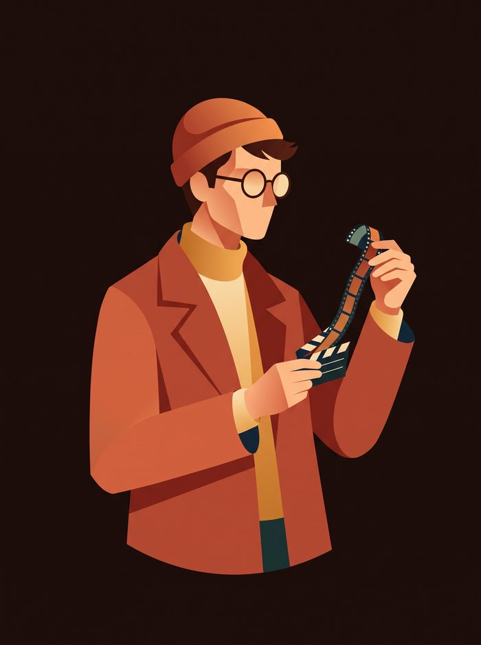

Cuando salen los créditos…
Mazo terminado
DIARIO DE UNA SESIÓN
Hay amores que siguen en los créditos.

Amor melancólico
En tus 5 elecciones se repiten amores a destiempo, recuerdos que pesan y encuentros que dejan huella. Este mazo celebra lo que pudo ser.
5 de 10 elegidas
Tu sesión, en corto
4
quieres ver
1
ya la viste
5
dejaste pasar
Ticket del mazo
Amor melancólico · 5 de 10 elegidas
Afinidades de tus elecciones
Temas presentes en las 5 películas elegidas.
Amor melancólico
5 de 5
100%
Nostalgia
4 de 5
80%
Encuentros fugaces
3 de 5
60%
Los temas pueden coincidir. Hablan de estas películas, no de tu personalidad.